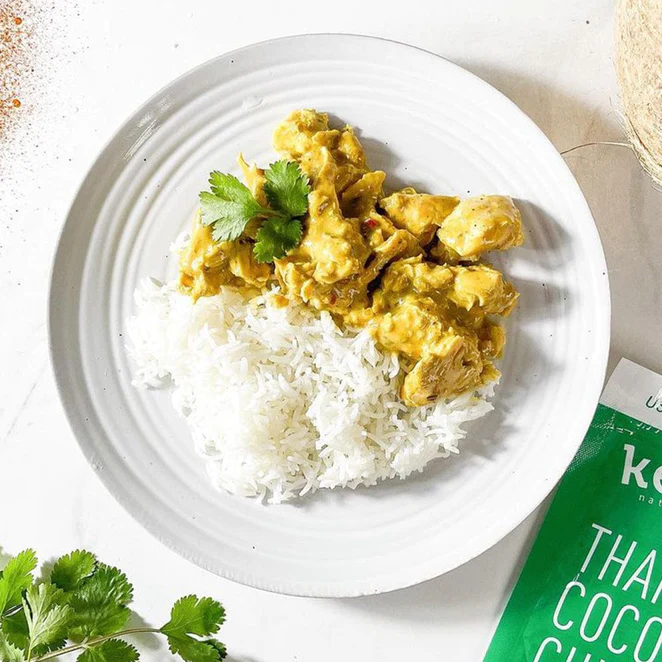

Yellow Curry

Yellow curry with chicken and white rice
Ingredients
- Package of Kevin's yellow chicken curry
- White rice
Steps
- Heat rice and water in microwave for five minutes.
- Heat up chicken in pan for 1-2 minutes per side.
- Pour curry onto chicken and heat for 30 seconds.
- Fluff rice with fork and pour curry over rice.
- Enjoy!